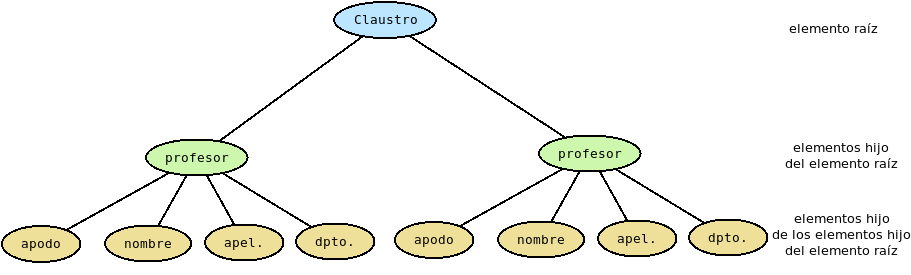
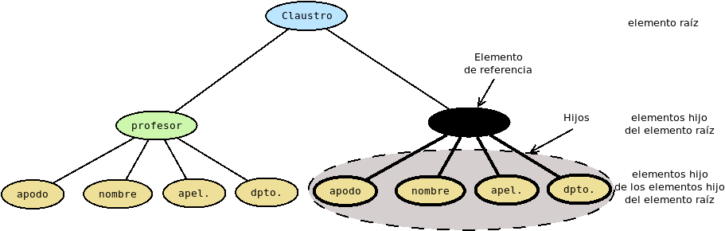
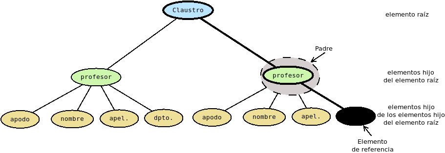
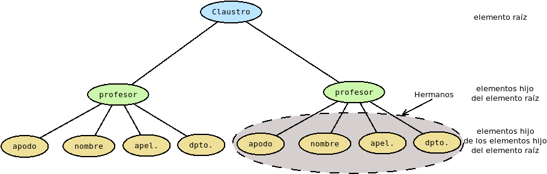

1.2.2. Lenguajes de marcas¶
Existen muchísimos lenguajes de marcas, pero nos reduciremos a tratar básicamente:
HTML, cuyo estudio pospondremos hasta la unidad dedicada.
La dupla SGML/XML, en especial el segundo, ya que el primero sólo lo trataremos con un mero carácter introductorio para presentar el segundo.
1.2.2.1. SGML¶
1.2.2.1.1. Concepto¶
En un principio, los lenguajes de marcas era procedimentales en los que no hay separación entre estructura y presentación. En la década de los 70, en el seno de IBM se desarrolló GML como un lenguaje de macros para el lenguaje de marcas procedimental Script, que permitía marcar el texto en términos de párrafos, listas, etc.[1] Esta idea de enfocarse en la descripción de la estructura cristalizó a mediados de la década siguiente con la publicación en 1986 de la norma SGML (ISO 8879) para la definición de lenguajes de marcas que se basa en establecer dos principios sobre el marcado:
Debe ser declarativo, esto es, describir la estructura del documento y no establecer cómo debe procesarse.
Debe ser inequívoco y riguroso a fin de que pueda definirse su procesamiento usando las mismas técnicas que se usan para procesar los programas.
SGML, pues, no es un lenguaje concreto, sino un conjunto de normas para crear lenguajes de marcas descriptivos. Dicho de otra forma, es un metalenguaje. En consecuencia, todo documento SGML debe ir acompañado de un documento que defina sobre sus marcas:
Cómo deben ser (en principio, tienen la forma
<marca>, pero puede definirse otra)Cuáles son las marcas posibles y qué atributos pueden tener.
Si pueden omitirse.
Cuáles son las reglas para utilizar estas marcas dentro del texto.
Nota
Observe que al indicar una marca qué función cumple una parte del
texto, debe poderse expresar desde dónde a donde va dicha parte. El modo
predeterminado que tiene SGML de hacer esto es usando una etiqueta de
apertura con el aspecto <marca> y su correspondiente de cierre con el
aspecto </marca>. Por ejemplo:
<marca>Este es el texto que marco</marca>
Al documento que define el lenguaje se le conoce como DTD. Por ejemplo, ante esta definición[2]:
<!ELEMENT capitulo - - (titulo, seccion+)>
<!ELEMENT titulo o o (#PCDATA)
<!ELEMENT seccion - - (titulo, p+)>
<!ELEMENT p - o (#PCDATA)>
Un trozo del documento SGML podría ser:
<capitulo>Introducción al XML
<seccion>Concepto
<p>El XML es un lenguaje de marcas descriptivo, etc...
<p>Otro párrafo, etc.
</seccion>
</capitulo>
Y podría ser ése, porque:
No se ha definido que las marcas tengan un aspecto distinto al predeterminado.
Los capítulos contienen un título y una serie de secciones (al menos una). No puede omitirse la etiqueta ni al empezar ni al acabar.
Los títulos contienen texto y puede omitirse su etiqueta. Por supuesto, porque el no incluirla no lleva a equívoco.
Las secciones contienen un título y uno o más párrafos. Tampoco pueden omitirse sus etiquetas.
Los párrafos contienen texto y puede omitirse su cierre.
En el ejemplo hemos hecho uso de la posible omisión de etiquetas, que siempre es opcional. El texto anterior es equivalente a este en que se prescinde de las omisiones:
<capitulo><title>Introducción al XML</title>
<seccion><title>Concepto</title>
<p>El XML es un lenguaje de marcas descriptivo, etc...</p>
<p>Otro párrafo, etc.</p>
</seccion>
</capitulo>
1.2.2.1.2. Características¶
Las características fundamentales de SGML son las siguientes:
Los documentos deben ser de texto plano, es decir, constituidos por caracteres que pueden ser escritos con un simple editor de textos.
El marcado debe ser descriptivo y absolutamente independiente de cómo vaya a ser procesado.
El marcado debe ser riguroso e inequívoco a fin de permitir su procesamiento posterior.
1.2.2.1.3. Partes¶
Un documento SGML está constituido por tres partes:
- Declaración SGML
Una descripción de las características del documento SGML. Es aquí, por ejemplo, donde puede redefinirse la forma que adquirirán las marcas y que no sea la ya descrita como
<marca>.
- Tipo de documento
La definición del tipo de documento, o sea, el DTD. Expone la gramática del lenguaje. Lo habitual es que se haga una simple declaración y la exposición se haga en archivo aparte.
- Contenido,
esto es, una instancia concreta del tipo de documento, en que todo el contenido está incluido dentro de un elemento de primer nivel.
Por ejemplo:
<!SGML "ISO 8879:1986"
-- La declaración es larga y omitimos su contenido --
>
<!DOCTYPE ejemplo SYSTEM "gramatica.dtd">
<ejemplo>
<!-- Todo el contenido aquí -->
</ejemplo>
1.2.2.1.4. Derivados¶
Al ser SGML un metalenguaje, muchos lenguajes posteriores han tomado esta norma para definirse. Citaremos algunos:
DocBook es un dialecto SGML enfocado a la generación de documentación técnica. Tiene también una versión XML. Hasta 2016, por ejemplo, fue usado por el núcleo de Linux para generar su documentación[3].
TEI (página web), nacido como un SGML para la codificación de textos en el ámbito de las humanidades. La RAE, por ejemplo, lo usan para codificar parte de su base de datos. Las versiones recientes, no obstante, están basadas en XML.
Ver también
Si tiene interés, puede leer este interesante artículo sobre TEI.
HTML, dialecto enfocado a la publicación web, pero sólo hasta su versión 4.01. Ya discutiremos sobre ello, cuando tratemos las versiones de HTML.
XML, que se tratará a continuación.
1.2.2.2. XML¶
1.2.2.2.1. Introducción¶
1.2.2.2.1.1. Concepto¶
XML es una simplificación de SGML que elimina muchas de sus características más complejas, con el objeto de facilitar la creación de procesadores capaces de tratar los documentos escritos en alguno de sus dialectos. Es, pues, un subconjunto de SGML y, como él, un metalenguaje. Estas simplificaciones se concretan en[4]:
Se define que las marcas sólo pueden expresarse del modo predeterminado, o sea,
<marca>para apertura, y</marca>para cierre.Toda etiqueta debe ser expresamente abierta y cerrada.
Los atributos de las marcas siempre requieren un valor y que éste se entrecomille.
Se define también una única notación para definir entidades (
&nombre;). Ya trataremos las entidades, ahora basta con saber que son la forma de definir las marcas referenciales.Los nombres son sensibles al uso de mayúsculas y minúsculas.
El XML se adoptó rápidamente hasta el punto que lenguajes de marcas SGML se redefinieron para cumplir con las simplificaciones impuestas por XML.
1.2.2.2.1.2. Lenguajes¶
Aparte de TEI o DocBook, ya citados al tratar SGML, porque se reescribieron en versión XML:
XHTML (versiones 1 y 2), que fueron una reescritura de HTML para que el lenguaje cumpliera las reglas generales del XML.
XSLT, lenguaje para definir la transformación de un documento XML en otro distinto o, incluso, en algo que no sea XML.
RSS, un lenguaje pensado para la distribución de contenido en la web.
MathML, un lenguaje para escribir fórmulas matemáticas.
SVG, un lenguaje para la descripción de gráficos vectoriales. Los navegadores web modernos tienen soporte directo para él.
OpenDocument, lenguaje XML, establecido como estándar, para la composición de documentos de texto, hojas de cálculo, presentaciones o gráficos vectoriales.
1.2.2.2.1.3. Aplicaciones¶
XML desde su aparición ha sido ampliamente adoptado, aunque también ha recibido críticas por ser considerado por algunos un lenguaje muy redundante y verborreico. Entre sus principales aplicaciones está:
La creación de documentos semánticos estructurados, que fue la principal razón de su creación. TEI es un ejemplo de ello. Sin embargo, ha perdido algo de fuelle en la creación de documentos algo más generales, en donde soluciones basadas en lenguajes de marcas ligeros como Markdown o ReStructured Text le han comido terreno.
Como formato para el intercambio de datos, aunque en este campo pierde terreno frente a formatos con JSON.
Para el almacenamiento de cantidades modestas de datos estructurados. Por ejemplo, los datos de configuración de una aplicación, aunque para este caso pierde terreno frente a formatos como YAML.
Nota
Obsérvese que en el primer caso se trata de marcado descriptivo orientado al documento, mientras que en los dos segundos se trata de marcado descriptivo orientado al dato. SGML y su evolución XML son lenguajes de marcas y, en consecuencia, son más adecuados para lo primero, pese a lo cual XML gozó de gran predicamento y se usó profundamente para esos otros dos casos. La tendencia, sin embargo, paró hace tiempo y en los últimos años se suelen usar los lenguajes de serialización de datos (fundamentalmente JSON y YAML) cuando se quiere estructurar datos.
Para la creación de documentos semánticos estructurados su suerte es más diversa:
pierde terreno para usos que requieren la escritura directa del usuario, ya que los lenguajes de marcado ligero son mucho más apropiados para esta tarea.
en cambio, sigue teniendo buena salud cuando el marcado no se escribe directamente, sino a través de una aplicación. Por ejemplo, el formato OpenDocument, que no se escribe directamente sino a través de aplicaciones como LibreOffice, o SVG que al ser un formato para gráficos vectoriales precisa que se usen aplicaciones de dibujo como Inkscape.
1.2.2.2.1.4. Ejemplo introductorio¶
Echemos un vistazo a este XML que permite
gestionar los casilleros de los profesores de un centro de enseñanza:
Casilleros de profesores
<?xml version="1.0" encoding="UTF-8"?>
<claustro centro="IES Pepe Botella">
<profesor id="p1">
<apelativo>Pepe</apelativo>
<nombre>José</nombre>
<apellidos>Suárez Lantilla</apellidos>
<departamento>Inglés</departamento>
</profesor>
<profesor id="p13">
<apelativo>Cristina</apelativo>
<nombre>María Cristina</nombre>
<apellidos>Prieto Monagas</apellidos>
<departamento>Biología y Geología</departamento>
</profesor>
<profesor id="p15">
<apelativo>Manolo</apelativo>
<nombre>Manuel</nombre>
<apellidos>Páez Robledo</apellidos>
<departamento>Matemáticas</departamento>
</profesor>
<!-- Profesor con casillero(s) adicional(es) -->
<profesor id="p17" casillero="17 43">
<apelativo>Lucía</apelativo>
<nombre>Lucía</nombre>
<apellidos>Gálvez Ruiz</apellidos>
<departamento>Inglés</departamento>
</profesor>
<!-- En principio, si el casillero está vacío
la aplicación les asigna el que indica su identificador,
pero se puede asignar uno distinto.
-->
<profesor id="p28" casillero="52">
<apelativo>Miguel Ángel</apelativo>
<nombre>Miguel Ángel</nombre>
<apellidos>Campos Sánchez</apellidos>
<departamento>Historia</departamento>
</profesor>
<!-- Profesor sin casillero (tienen el 0) -->
<profesor id="p81" casillero="0">
<apelativo>Verónica</apelativo>
<nombre>Verónica</nombre>
<apellidos>Martín Díaz</apellidos>
<departamento>Biología y Geología</departamento>
</profesor>
<!-- Profesor sustituto -->
<profesor id="p86" sustituye="p81">
<apelativo>Roberto</apelativo>
<nombre>Roberto</nombre>
<apellidos>Mínguez Torralbo</apellidos>
</profesor>
</claustro>
Prudencia
El documento no es un texto marcado, sino una sucesión de datos, por lo que estamos utilizando este XML para marcado descriptivo orientado al dato, o sea, justamente para algo para lo que se ajusta mejor un lenguaje de serialización de datos. Por lo general, a partir de ahora, todos los ejemplos de XML tendrán esta particularidad.
Se observan en él las marcas claramente diferenciadas del contenido, pero aún nos viene demasiado grande entender los detalles del documento. Volveremos a ellos según aparezcan más adelante.
Introduciremos a continuación cuál es la gramática general de los documentos XML, pero nos conviene de antemano saber cómo comprobar si son bien formados. Tenemos varias alternativas:
Un validador online como el proporcionado por xmlvalidation.com.
La orden xmlstarlet, instalable a través del paquete xmlstarlet:
$ xmlstarlet val -e casilleros.xml
Ver también
Para más información sobre xmlstarlet consulte el epígrafe sobre validación con un DTD.
ref:Visual Studio Code <vscode> es capaz de comprobar la sintaxis si se instala en él una extensión apropiada como XML de RedHat.
1.2.2.2.2. Anatomía del documento¶
El propósito del epígrafe es radiografiar un documento XML sin entrar a analizar cuáles con las reglas que debe cumplir.
1.2.2.2.2.1. Componentes¶
Los documentos XML están constituidos por un conjunto de componentes de los que es imprescindible conocer su nombre y qué refieren:
- Etiqueta (o marca)
Declara cuál es la función o el significado de una parte concreta del contenido. No es parte, pues, del contenido sino metainformación. Ya se ha indicado anteriormente que debe quedar inequívocamente claro cuál es el comienzo de la parte a la que afectan, para lo cual adoptan la forma
<nombre>y cuál es el final, en donde adoptan la forma</nombre>.- Texto
Es la información en sí del documento, desprovista de cualquier marca. Esán prohibidos los caracteres «<», «>» y «&», puesto que podrían confundir al procesador.
- Elemento
Toda parte del contenido que constituye una parte diferencia del resto. Se delimita por una etiqueta de apertura y una de cierre. Por ejemplo, esto es un elemento
<apelativo>:<apelativo>Pepe</apelativo>
y esto un elemento
<profesor>:<profesor id="p1"> <apelativo>Pepe</apelativo> <nombre>José</nombre> <apellidos>Suárez Lantilla</apellidos> <departamento>Inglés</departamento> </profesor>
En el primer caso, el elemento está constituido exclusivamente por texto; mientras que en el segundo, el elemento lo constituyen varios elementos[5].
- Atributo
Pares nombre/valor que sirven para caracterizar al elemento. Se incluyen dentro de la etiqueta de apertura de manera que siempre deben incluir valor y este debe estar escrito entre comillas simples o dobles. Cada elemento puede tener ninguno, uno o varios atributos. Por ejemplo, en el elemento raíz
claustro:<claustro centro="IES Pepe Botella">
centro es un atributo.
- Instrucción de procesamiento
Instruyen al procesador y no forman parte de la información del documento. Por ejemplo:
<?xml version="1.0" encoding="UTF-8"?>informa al navegador de cuál es la versión de XML usada y qué codificación de caracteres se ha usado para el texto.
Nota
El nombre de la codificación no es sensible a mayúsculas o minúsculas (véase Character Sets). Por tanto, también podríamos haber escrito utf-8.
- Comentario
Permiten hacer alguna anotación al marcado. Se abren con la secuencia
<!--y se cierran con-->. Dentro de ellos se puede escribir cualquier carácter incluidos nos no válidos como texto, excepto dos guiones seguidos:--:<!-- Profesor sin casillero (tienen el 0) -->
- Sección CDATA
Sección del documento que el procesador tratará como texto en crudo en el que podrán encontrarse caracteres prohibidos. A diferencia del comentario, el contenido de una sección CDATA sí forma parte del contenido de la información. Su comienzo se marca con
<![CDATA[y su cierre con]]>.- Entidad
Sirven para referenciar bien un carácter (que no puede escribirse directamente), bien un conjunto de carácteres a los que se ha preferido dar nombre. En el ejemplo, se han usado entidades para notas los nombres de los departamentos:
<departamento>&EFI;</departamento>
La entidad
&EFI;está definida en archivo aparte (ya se verá cómo se hacen tal definición al tratar el DTD) y equivale a «Educación Física». Por tanto, lo anterior es equivalente a que se hubiera escrito:<departamento>Educación Física</departamento>
- Nodo
Término genérico pasa designar al resto de componentes: nodo elemento, nodo atributo, nodo texto, nodo comentario, etc. Excluimos a la marca de esta definición.
Ver también
Por lo general, la información puede expresarse como elemento hijo o como atributo de un elemento. Este artículo de IBM establece algunos criterios para elegir entre uno u otro.
1.2.2.2.2.2. Partes¶
Todo documento XML consta de dos partes:
- Preámbulo
Se encuentran en él, habitualmente, algunas instrucciones de procesamiento y la declaración del tipo de documento (equivalente a la que se hace en SGML). Retomando el ejemplo ilustrativo:
<?xml version="1.0" encoding="UTF-8"?> <!DOCTYPE claustro SYSTEM "casilleros.dtd">
Nota
En nuestro ejemplo no hemos incluido esta declaración, porque hasta la próxima unidad no abordaremos la definición de una gramática particular.
- Contenido
Es la información que contiene propiamente el documento junto a las marcas que lo caracterizan descriptiva o procedimentalmente. Todo el contenido debe estar incluido dentro de un elemento raíz. Retomando el ejemplo ilustrativo:
<claustro centro="IES Pepe Botella"> <!-- Aquí todo el documento --> </claustro>
Antes de terminar la exposición de las partes que componen el documento, es preciso aclarar en un aspecto: XML es un simplificación de SGML y en consecuencia, es SGML. Dicho de otra forma: todo XML es un SGML. Tenemos la declración del tipo de documento y también el contenido, pero ¿dónde está la declaración SGML, que también es necesaria en un SGML? La respuesta es que se omite, porque siempre es ésta y, si se usa un procesador XML es porque nuestro SGML es un XML y no es necesario incluir tal declaración.
1.2.2.2.2.3. Estructura jerárquica¶
Tanto en SGML como en XML los elementos debes estar perfectamente anidados unos dentro de otros, esto es, dado un elemento siempre habrá un único nodo que lo contenga completamente, excepto el caso del elemento raíz que es el que abraca todo el contenido y no puede estar incluido dentro de nada.
Gráficamente, podemos representar este hecho, así:
Que se pueda establecer este árbol jerárquico, da pie a algunas definiciones:
- Hijo de un elemento dado:
Es aquel elemento directamente contenido en él.
- Descendiente de un elemento dado:
Es aquel nodo que directamente o a través de otros intermedios está contenido en él. En el ejemplo, si los hijos señalados contuvieran a su vez hijos, esto sería descendientes del elemento de referencia.
- Padre de un elemento dado:
Es aquel que lo contiene directamente.
- Ascendiente de un elemento dado:
Es aquel que lo contiene directaente o a través de otros intermedios. En la figura anterior están remarcados en trazo más grueso los elementos ascendientes del de referencia.
- Hermano de un elemento dado:
Es aquel que comparte con él el mismo padre.

1.2.2.2.3. Reglas generales¶
Clasificándolas según el componente al que afectan son las siguientes (se obvian las menos importantes):
- Etiquetas
Tienen la forma
<etiqueta>en su apertura y</etiqueta>en su cierre:<nombre>José</nombre>
En caso de que la marca abarque un elemento vacío, se puede usar la notación:
<vacío />
que es equivalente a:
<vacio></vacio>
Toda etiqueta de apertura debe tener su correspondiente de cierre explícita.
El nombre de la etiqueta debe ser una sola parabra. Dicha palabra puede estar constituida por cualquier combinación de números y letras, pero el primer caracter debe ser siempre una letra. Se pueden usar signos de puntuación excepto las comillas simples y dobles, apostrofes, signos de acentuación, dólar, y punto y coma. Los dos puntos tienen un significado particular del que se hablará al tratar los espacios de nombres.
Los nombres de etiquetas que empiecen por
xmlse reservan para un uso específico.XML es sensible a mayúsculas y minúsculas (esta regla, en realidad, es aplicable a cualquier componente).
- Elementos
Todo el contenido del documento debe estar incluido dentro de un único elemento raíz.
Los elementos deben estar correctamente anidados dentro de otros, lo cual implica que el último elemento que se abrió deba ser el primero que se cierre.
Estas dos reglas determinan que los elementos se organicen en una estructura jerárquica.
- Atributos
Tienen la forma
nombre="valor", esto es:El nombre del atributo.
El signo de igualdad (
=).El valor que adopta el atributo para el elemento que caracteriza, siempre escrito entre comillas.
Por ejemplo:
<claustro centro="IES Pepe Botella"> <!-- Aquí todo el documento --> </claustro>
Se incluyen exclusivamente dentro de la etiqueta de apertura.
Pueden obviarse atributos bien cuando tienen valor predeterminado, bien cuando es lícito que su valor quede indefinido.
En caso de que un atributo aparezca, debe forzosamente tener valor. Esto, por tanto, es inválido:
<!-- Inválido: el atributo "centro" aparece sin valor. --> <claustro centro> <!-- Aquí todo el documento --> </claustro>
Si un elemento se caracteriza con varios atributos, estos pueden escribirse en cualquier orden.
Para un mismo elemento no puede repetirse el atributo. Por tanto, esto es incorrecto:
<!-- Inválido: un mismo atributo aparece repetido dos veces. --> <claustro centro="IES Número 1" centro="IES Número 2"> <!-- Aquí todo el documento --> </claustro>
- Entidades
Se representan con un símbolo «&» antes del nombre de la entidad y un «;» después. Por ejemplo:
<departamento>&INF;</departamento>
Las entidades pueden ser de dos tipos:
Predefinidas: Hay cinco entidades que predefine la propia especificación de XML:
Entidad
Significado
Carácter
Explicación
&
«&»
Et
<
«<»
Menor que
>
«>»
Mayor que
'
«\”»
comilla simple
"
«\»»
comilla doble
Además de estas, si se codifica en UTF-8, pueden usarse entidades para notas caracteres que no seamos capaces de escribir directamente con el teclado. Para ello, hay que averiguar cuál es su correspondiente código numérico UNICODE en decimal o hexadecimal y escribirlo del siguiente modo:
&#xHEX;si el código es hexadecimal.&#DEC;si el código es decimal.
Por ejemplo, podemos usar esta tabla de caracteres de cuatro columnas, de las cuales nos interesa la primera que es la que muestra el código del carácter; y la segunda que muestra escrito el carácter. Además, hay distintos bloques de caracteres que pueden escogerse en la lista desplegable «go to the other block». Así, si estuviéramos escribiendo un manual de física y quisiéramos escribir el nombre del padre del Electromagnetismo, Hans Christian Ørsted, nos toparíamos con que hay un carácter (Ø) que no es propio del castellano, y en consecuencia somos incapaces de escribirlo directamente con el teclado. La estrategia para escribir este carácter mediante una entidad es el siguiente:
Accedemos a la pagina indicada.
Escogemos el bloque preciso. Al tratarse de una lengua europea, es más que probable que se encuentre en uno de los bloques dedicados a caracteres latinos.
Localizamos el bloque en la tabla para descubrir que es “U+00D8”. Eso significa que el símbolo hexadecimal es «d8» y el carácter puede escribirse mediante la entidad
Ø.Opcionalmente, podemos ir a la parte superior anterior a la tabla donde se muestran opciones de visualización y escoger que se muestre la columna «numerical HTML encoding of the Unicode character» en hexadecimal o decimal. Nos aparecerá directamente el código
ØoØ, respectivamente.
Así pues, nuestro XML podría escribirse así:
<cientifico> <nombre>Hans Christian Ørsted</nombre> <nacionalidad>Danesa</nacionalidad> </cientifico>
Definidas por el usuario en el documento que defina la gramática (un DTD por ejemplo). Es lo que se ha hecho en el ejemplo introductorio para las entidades
&EFI;,&HyG;, etc.
1.2.2.2.4. Espacios de nombres¶
XML introduce un concepto novedoso que no existía en SGML: los espacios de nombres
Un espacio de nombres es un contenedor de nombres dentro del cual cada
nombre es único. Es un concepto común a muchas ramas de la programación y
también se adaptó a XML. Así, los elementos <xsd:integer> o
<xsl:template> son en SGML nombres de elementos sin nada especial, ya que
los dos puntos («:») son un carácter válido. En cambio, en XML el primer
elemento tiene el nombre «integer» dentro de un espacio de nombres
representado con el prefijo «xsd» y el segundo el nombre «template» dentro de
un espacio de nombres representado con «xsl».
De esta forma, XML (haciendo gala de su característica de extensible) permite crear la gramática de un nuevo tipo de XML mezclando las gramáticas de tipos distintos de XML, a cada una de las cuales se le asocia un espacio de nombres diferente. Esto permite conjugar ambas gramáticas sin que exista peligro de colisión entre los nombres de las gramáticas.
Por ejemplo, supongamos que tenemos definido un tipo de XML para poder escribir direcciones postales. Algo así:
<?xml version="1.0" encoding="UTF-8"?>
<!DOCTYPE direccion SYSTEM "direccion.dtd">
<direccion>
<via tipo="calle">Callo, 5</via>
<cp>12345</cp>
<localidad>Villaconejos</localidad>
</direccion>
Ahora deseamos crear un nuevo tipo XML que permita incluir la dirección de los profesores. Podríamos hacerlo a través de los espacios de nombres:
<?xml version="1.0" encoding="UTF-8"?>
<!DOCTYPE claustro SYSTEM "casilleros.dtd" [
<!ENTITY ING "Inglés">
]>
<c:claustro centro="IES Pepe Botella" xmlns:c="urn:profesores">
<c:profesor id="p1">
<c:apelativo>Pepe</c:apelativo>
<c:nombre>José</c:nombre>
<c:apellidos>Suárez Lantilla</c:apellidos>
<c:departamento>&ING;</c:departamento>
<d:direccion xmlns:d="urn:direccion">
<d:via tipo="calle">Callo, 5</d:via>
<d:cp>12345</cp>
<d:localidad>Villaconejos</d:localidad>
</d:direccion>
</c:profesor>
<!-- Otros profesores -->
</c:claustro>
Lo que hacemos es declarar que el espacio de nombres asociado a la URN «urn:profesores» se notará con el prefijo «c»; y el espacio de nombres asociado a la URN «urn:dirección», con el prefijo «d». Podemos elegir el prefijo que más nos convenga en cada caso, pero no las URNs: ya que la URN correspondiente a cada gramática se define al crear la gramática. Lo habitual es que se usen URL y no URNs arbitrarias, como hemos hecho nosotros.
Nota
Tal como hemos escrito el XML estamos obligados a declarar el prefijo «d» para el espacio de nombres «urn:direccion» cada vez que aparezca un elemento dirección. Los espacios de nombres es posible definirlos en cualquier ascendiente, por lo que lo más cómodo suele ser declarar en el elemento raíz todos los espacios de nombres que pretendamos utilizar:
<c:claustro centro="IES Pepe Botella" xmlns:c="urn:claustro" xmlns:d="urn:direccion">
Para simplificar la escritura del XML que usa espacios de nombres existe el concepto de espacio de nombres predeterminado, que es aquel cuyo prefijo es nulo:
<?xml version="1.0" encoding="UTF-8"?>
<!DOCTYPE claustro SYSTEM "casilleros.dtd" [
<!ENTITY ING "Inglés">
]>
<claustro centro="IES Pepe Botella" xmlns="urn:profesores">
<profesor id="p1">
<apelativo>Pepe</apelativo>
<nombre>José</nombre>
<apellidos>Suárez Lantilla</apellidos>
<departamento>&ING;</departamento>
<d:direccion xmlns:d="urn:direccion">
<d:via tipo="calle">Callo, 5</d:via>
<d:cp>12345</cp>
<d:localidad>Villaconejos</d:localidad>
</d:direccion>
</profesor>
<!-- Otros profesores -->
</claustro>
En este caso, es el espacio de nombres de «urn:profesores». Ahora bien, es perfectamente lícito cambiar el espacio de nombres predeterminado: al cambiarlo, tal cambio afecta al elemento y a todos sus descendientes. Por tanto, podríamos haber escrito también:
<?xml version="1.0" encoding="UTF-8"?>
<!DOCTYPE claustro SYSTEM "casilleros.dtd" [
<!ENTITY ING "Inglés">
]>
<claustro centro="IES Pepe Botella" xmlns="urn:profesores">
<profesor id="p1">
<apelativo>Pepe</apelativo>
<nombre>José</nombre>
<apellidos>Suárez Lantilla</apellidos>
<departamento>&ING;</departamento>
<direccion xmlns="urn:direccion">
<via tipo="calle">Callo, 5</d:via>
<cp>12345</cp>
<localidad>Villaconejos</localidad>
</direccion>
</profesor>
<!-- Otros profesores -->
</claustro>
en donde desaparecen por completo los prefijos, porque los espacios de nombres
están juntos, pero no revueltos, esto es: dentro de elementos
<direccion>, sólo hay elementos de su propio espacio de nombres.
1.2.2.2.5. Ejercicios resueltos¶
Escribir la versión XML del primer ejercicio YAML resuelto.
Solución propuesta
<?xml version="1.0" encoding="UTF-8"?> <recetas> <!-- El tiempo está en minutos --> <receta id="r01" nombre="ensalada" preparacion="5"> <ingrediente nombre="tomate" unidad="pieza" cantidad="2" /> <ingrediente nombre="cebolla" unidad="pieza" cantidad=".25" /> <ingrediente nombre="lechuga" unidad="gramo" cantidad="150" /> <ingrediente nombre="sal" unidad="gramo" cantidad="2" /> <ingrediente nombre="vinagre" unidad="cc" cantidad="3" /> <ingrediente nombre="aceite" unidad="cc" cantidad="6" /> </receta> <receta id="r02" nombre="bocadillo de anchoas" preparacion="4"> <ingrediente nombre="pan" unidad="pieza" cantidad="1" /> <ingrediente nombre="anchoa" unidad="pieza" cantidad="3" /> </receta> <!-- Más recetas --> </recetas>
Escribir la versión XML del segundo ejercicio resuelto.
Solución propuesta
<?xml version="1.0" encoding="UTF-8"?> <cadena nombre="Burriquín"> <recetas> <!-- El tiempo está en minutos --> <receta id="r01" nombre="ensalada" preparacion="5"> <ingrediente nombre="tomate" unidad="pieza" cantidad="2" /> <ingrediente nombre="cebolla" unidad="pieza" cantidad=".25" /> <ingrediente nombre="lechuga" unidad="gramo" cantidad="350" /> <ingrediente nombre="sal" unidad="gramo" cantidad="2" /> <ingrediente nombre="vinagre" unidad="cc" cantidad="3" /> <ingrediente nombre="aceite" unidad="cc" cantidad="6" /> </receta> <receta id="r02" nombre="bocadillo de anchoas" preparacion="4"> <ingrediente nombre="pan" unidad="pieza" cantidad="1" /> <ingrediente nombre="anchoa" unidad="pieza" cantidad="lata" /> </receta> <!-- Más recetas --> </recetas> <restaurante id="re01" nombre="El tragón feliz"> <domicilio> <direccion>c/ Callo, nº 25. Bajo.</direccion> <municipio>Vallecito frondoso</municipio> <cp>12345</cp> </domicilio> <carta> <!-- Este plato se sirve como ración o como media o como tapa --> <plato ref="r01" tipo="racion media tapa" /> <plato ref="r02" tipo="media" /> <!-- Más platos --> </carta> </restaurante> <!-- Más restaurantes de la cadena --> </cadena>
Notas al pie